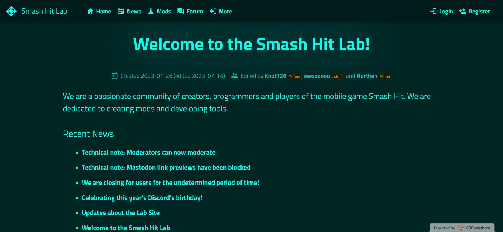

Smash Hit Lab Website
{kind=link}
The Smash Hit Lab Website — which is powered by Labbyware, a custom content system — is a mod database, forum, news site and community centre for fans of the mobile game Smash Hit. This is probably the first widely usable project I have made moreso from scratch.
Visit the Smash Hit Lab
This is the website as it is currently running.
Features
It features the abilities to:
- Accounts: create accounts, log in, authentication, password resets
- User pages: freeform user info, message wall, various actions and info, user blocking
- Mod database: various CRUD actions, WIP inline editor
- Comments and reviews on mod pages and articles, including moderation actions
- Basic forum section
- Notifications system: comments and mentions, staff custom announcements
- News articles: staff-only editing, standard CRUD actions, privacy settings
- General moderation: list, ban and delete users, update permissions and roles
- Admin tools: settings, backup, site style editing, send notifications
Tour de Code
The backend was written in PHP, with no frameworks and not using a real database. I don't really like PHP as a language — I know that few actually do — but it's what most free webhosts seem to only provide, and it's still one of the fastest "make something from scratch" languages despite having so many quirks.
As for the database, it's a thin wrapper around the filesystem and JSON that functions like a document store database, mainly because I don't really enjoy SQL. For any large site, using JSON and plain files wouldn't work, but I think for a small site this isn't an issue.
My favourite part of the codebase is probably either the generic discussions system that handles reviews, comments and message walls or how sending a notification can be done by calling notify($name, $title, $url) (or notify_many or notify_scan). It should probably be behind some kind of event or message system (one is implemented and used elsewhere!), but ATM just calling it directly is fine. :)
I think I could have taken a bit more time at the start to improve code quality, however. The implementation of database was first and I think it's pretty nice because you can just do things like:
$db = new Database("some_table_name");
if ($db->has("my_object")) {
$obj = $db->load("my_object");
}
else {
$db->save("my_object", array("1" => "2", "3" => "4"));
$obj = $db->load("my_object");
}
But other places sometimes work with primitives where functions should probably exist for doing those things. For a long time, for example, there wasn't a nice function to echo out a form to the screen — which is another issue. I really should not have made the mistake of using echo directly and instead creating a Page class that has methods like append($content), set_title($title), etc. I'm working to fix this — the newer endpoints now use this system — and the codebase is under 10K lines right now, so I think it might not be too hard to do.
Security was something I have tried to consider when creating the site, though I know some things I didn't initially think about that would need some work.
Future plans
The current situation is a bit akward: I'm not a staff member for the Smash Hit Lab anymore, but I am still hosting the site and still developing it from time to time. It's not the most comfortable thing and might interfere with things.
Aside from that, I hope to make the source code to the site open source soon. I find it unlikely that anyone would want to add to the site, but I feel a community site like this should be open source.
More generally, I would like to expand on the idea of making "community creation software." This kind of thing doesn't really exist today. Think of an exprience similar to Fandom, but better integrated becuase it isn't community platform slapped on top of MediaWiki. It has tools needed to form a community, like a place for discussions, a wiki for keeping information, a blog or news section for staff, messages and maybe more in one place.